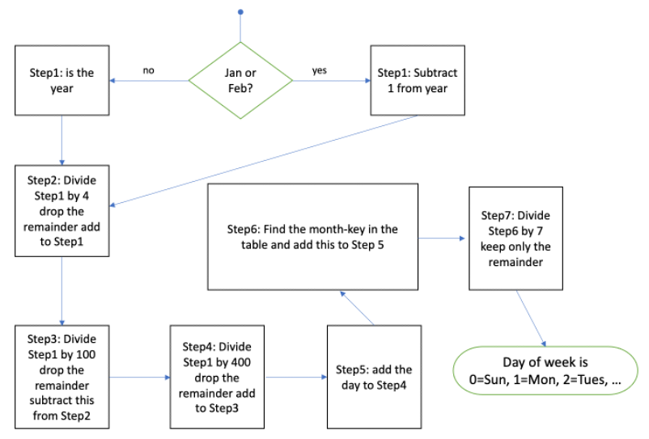

The following is a flowchart of Tomohiho's “doomsday” algorithm to determine a day of the week:

| Month | month-key |
|---|---|
| January | 0 |
| February | 3 |
| March | 2 |
| April | 5 |
| May | 0 |
| June | 3 |
| July | 5 |
| August | 1 |
| September | 4 |
| October | 6 |
| November | 2 |
| December | 4 |
| day | day number |
|---|---|
| Sunday | 0 |
| Monday | 1 |
| Tuesday | 2 |
| Wednesday | 3 |
| Thursday | 4 |
| Friday | 5 |
| Saturday | 6 |
day for the day a number from 1-31, month for the month (a String) “January”, “February”, etc., year a number 1900-2099 for the yearstep1 = ... as in the Lab exercise. Each step need not be a line of code. You can combine steps to get the same result. For example, steps 2 through 5 can be done in a single line of code. Note that you do not need variables for the steps unless the result of that step is used in multiple other steps (so step1 may be useful to have as a varoable). HINT: This program can be written in 8 lines of code using only 2 variables for calculations!parseInt() or Math.floor() to get the divisor and drop the remainderif or a ternary operatormonthKey from the month-key table and use it for Step 6% to get the remainder in Step 7Rx: <15 min Av: 15-20 min Sd: 20-25 min DNF: 25+ min
dow.html and use EMMET ! to set up the document.<body>
Month:<input id=month_id type="text">
Day:<input id=day_id type="text">
Year:<input id=year_id type="text">
<span id=dow_span></span>
<br>
<input type="button" value="Find day of week">
Add an onclick event attribute to the <button> and copy your dayoftheweek code as the value (a lot of code!). You will have to change some of the quotes inside your code to not conflict with the quotes for the onclick event attribute.
Assign the day, month, year the value attribute of the respective textboxes (use day_id, month_id, year_id). For day and year you will need to parseInt to convert these strings to integers.
monthKey variable to the <head> and replace the Month textbox with
Month:<select id='month_id'>
<script>
for(month in monthKey) {
document.write(`<option>${month}</option>`);
}
</script>
</select>
This last bit of code generates a select box of months using the monthKey object.
dow_span to the date and and the day of the week you had output to the console.Rx: <22 min Av: 22-30 min Sd: 30-35 min DNF: 35+ min
If you get stuck you can ask the instructor or TA for a screencast solution.